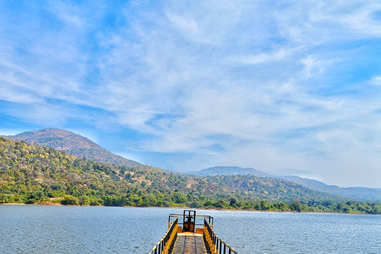

For those of you have already checked off all the popular road trip destinations around Bangalore and are in search for a new, undiscovered location — Dandiganahalli Dam is waiting! Unknown to most, this pretty spot sits just around 90 minutes away from the city and is a must visit. You’ll have to make your way across the highway (easy peasy) and then navigate a few villages and muddy roads (not-so easy peasy) to get to this small reservoir that’s surrounded by rocky, green hills. Follow Google Maps and it will bring you right to the banks of the serene waters. There’s a long bridge that runs right into the waters and you can reach its edge to take some spectacular pictures. Wading the waters though is highly dangerous and not recommended at all.
|  |
Situated 100 km from Bengaluru towards Chikkaballapur. After Chikkaballapur takes a left, and keep going around 35 km to reach Dandiganahalli dam. On the way, you find many small villages where you can ask the way also google maps can help you. There was no restriction and we were freely allowed to walk on the dam, Maybe because the reservoir was not full but had a decent amount of water. Dam is covered with mountains and at the end of the dam gate, you find a village too. One more new weekend gateway away from hustle bustle Bangalore life. Better to spend the weekend with nature instead of with concrete forest!! overall it was very good weather and ride. There are 2 hills which can be trekked. There is no trekking to be done to the dam. The dam is the main source of water to nearby villages. There are 2 home-stays around the dam. Which offers a few days and night packages. The dam can be reached by both 2 Wheeler's and 4 Wheeler's. Dandiganahalli Dam is perfect for a short outing. You can swing by and hone your photography/selfie skills (whichever you prefer). The place is also great for spotting colourful birds and you can also trek around the nearby hills. However, you’ll have to carry your own food and water since there’s not much around here. If you are bringing a picnic basket make sure you don’t litter since there’s no one to clean up after you. |
-Just a guy who travels and shares his experience